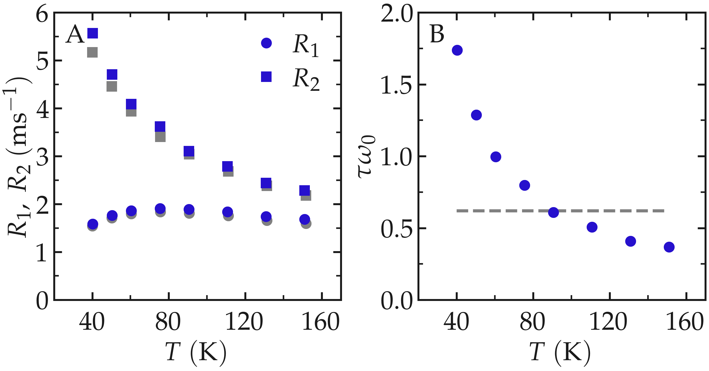

Code validation on a simple fluid¶
Here, the formalism presented in Section Mathematical framework and implemented in NMRDfromMD is used to predict the \(^1\mathrm{H}\)-NMR relaxation properties of a simple Lennard–Jones (LJ) fluid. The results are compared with the reference calculations of Grivet [2]. The system consists of 16,000 particles interacting through the classical LJ (12-6) potential, at a reduced density \(\rho^* = 0.84\) and reduced temperatures \(T^* = 0.8\)-\(3.0\) (corresponding to \(T = 30\)-\(160\,\text{K}\)), matching the conditions of Ref. [2]. Simulation details are given in Simulation methods; the input files and analysis scripts are available on GitHub, see dataset-LJ-fluid.
Benchmark results¶
The NMR relaxation rates \(R_1\) and \(R_2\) were evaluated at a fixed frequency of \(f_0 = 150\,\mathrm{GHz}\) (0.07 in reduced units) over the full temperature range. The results show that \(R_2\) decreases monotonically from \(5.6\,\mathrm{ms}^{-1}\) at \(T = 30\,\text{K}\) to \(2.3\,\mathrm{ms}^{-1}\) at \(T = 160\,\text{K}\). In contrast, \(R_1\) exhibits a maximum: it increases from \(1.6\,\mathrm{ms}^{-1}\) at \(T = 30\,\text{K}\) to \(1.9\,\mathrm{ms}^{-1}\) around \(T = 80\,\text{K}\), before decreasing to \(1.7\,\mathrm{ms}^{-1}\) at \(T = 160\,\text{K}\) (Fig. 1, panel A). The results are in good agreement with the reference calculations of Grivet [2], with typical differences of approximately \(5\text{--}7\,\%\).


Figure 1: A) NMR relaxation rates \(R_1\) (circles) and \(R_2\) (squares) as a function of temperature \(T\), computed from a Lennard–Jones simulation at a reduced frequency of 0.07, corresponding to \(f_0 = \omega_0/(2\pi) = 150\,\text{GHz}\). Results are compared with the reference data from Ref. [2] (gray symbols). B) Product \(\omega_0 \tau\) as a function of temperature. The dashed line indicates the condition \(\omega_0 \tau = 0.62\), corresponding to the BPP relaxation maximum. The inset shows a snapshot of the simulation, with atoms represented as spheres.
The temperature dependence of the relaxation rates can be understood in terms of the evolution of the molecular correlation time, \(\tau\). For this LJ fluid, the single-correlation-time approximation provides a good description of the spectral density [2]. In this framework, the spectral density follows a Lorentzian form:
As shown in panel B, the correlation time decreases with increasing temperature due to faster molecular motion. As a consequence, \(J(0)\), which from Eq. (8) satisfies \(J(0)=2\tau\), also decreases. A reduction of \(J(0)\) leads to a reduction of \(R_2\) (Eq. (2)) and explains the observed variation \(R_2\) with \(T\).
In contrast, \(R_1\) exhibits a non-monotonic temperature dependence, with a maximum near \(T = 80\)–\(90\,\text{K}\). This behaviour is explained by the BPP relaxation model (Eq. (1)). Inserting Eq. (8) into the BPP expression for \(R_1\), the maximum occurs when
The product \(\omega_0 \tau\), with \(\omega_0 = 2 \pi f_0\) and \(\tau\) obtained directly from the simulations, crosses this value around \(T = 80\)–\(90\,\text{K}\), which coincides with the maximum observed in \(R_1\) (Fig. 1, panel B).